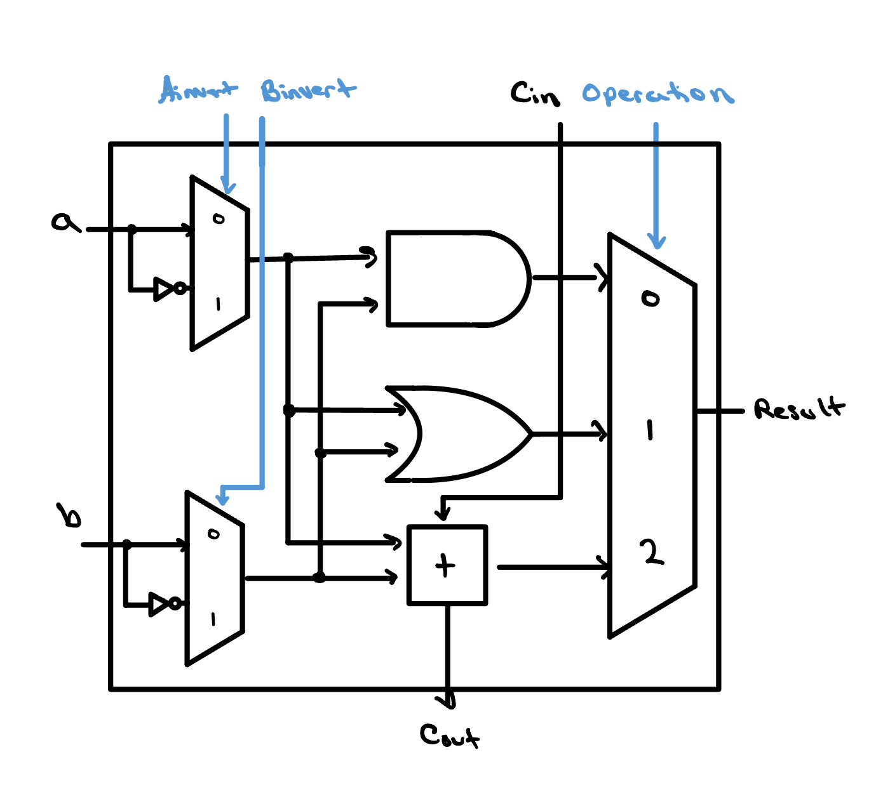
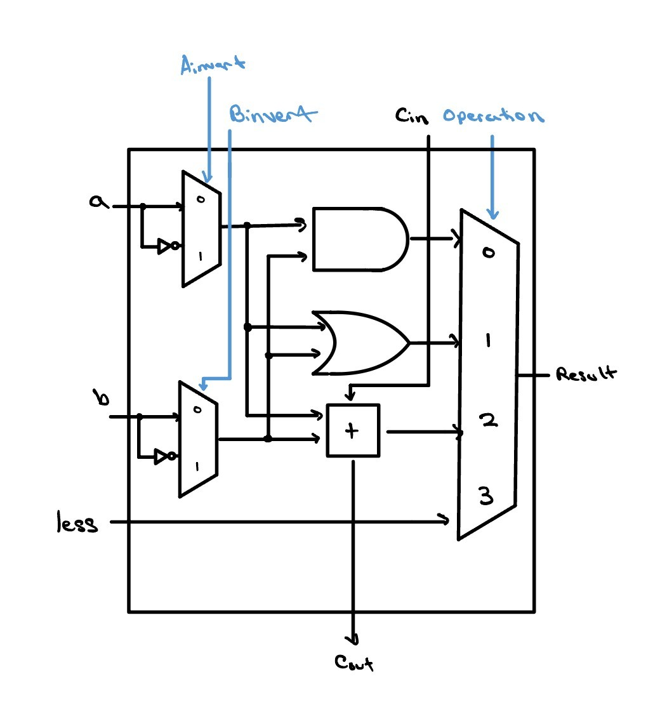

The 32-bit ALU Slice
A single ALU slice handles just one bit — a couple of logic gates, an adder, and a multiplexer that picks which result to keep. Stack thirty-two slices side by side, chain each carry into the next, and you have a complete 32-bit ALU.
Think you got this already?
Skip to Check Yourself

Check Yourself
Suppose you wanted to add the operations NAND and NOR to this ALU slice. How could you change the ALU to support it?
